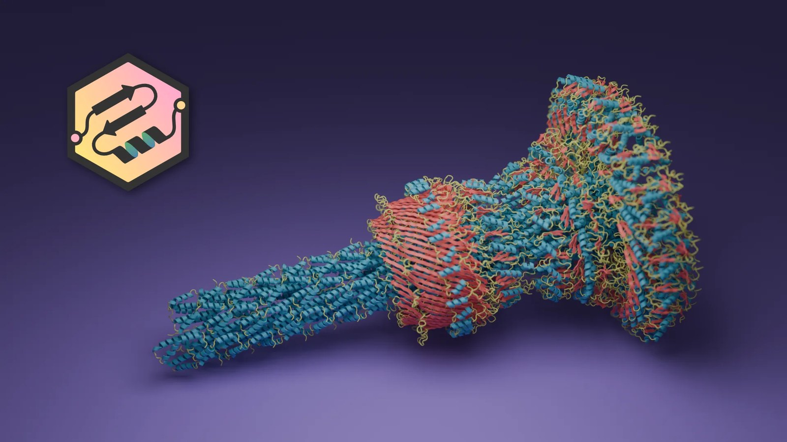

Molecular Nodes 520：Blender Geometry Nodes 的科學資料匯入與動畫工具持續擴充
Molecular Nodes 在 9 月 5 日更新至 520.0.0，持續提供分子、軌跡與 cryo-EM 等資料匯入，以及 Geometry Nodes 內的選取、造型與動畫節點。

外掛 ★★★☆☆
完整分析
DCC 工作流
Molecular Nodes 把原子、小分子、蛋白質、分子動力學 trajectory、cryo-EM 或 tomography 等資料直接帶進 Blender，並提供預製 Geometry Nodes 用於 selection、styling 與 animation。這代表複雜科學資料不必先手工轉成一般 mesh 才能視覺化。
製作價值
它不是典型遊戲資產工具，但對需要醫療、科學、科幻 UI 或程序化有機結構參考的美術很有價值；更重要的是展示 Geometry Nodes 作為專業資料到可視幾何中介層的成熟用法，可借鑑到其他 pipeline 工具。
升版與導入測試
若專案有資料視覺化需求，可用一組 trajectory 測匯入時間、節點可編輯性、幾何數量與 Eevee 或 Cycles 效能。一般遊戲專案則不需直接導入，但可以拆解其 node group 設計，作為程序化工具 UI 與資料映射參考。